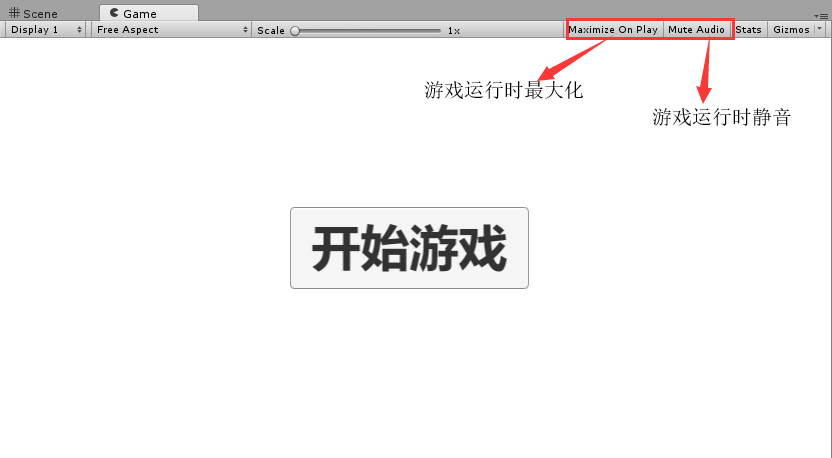
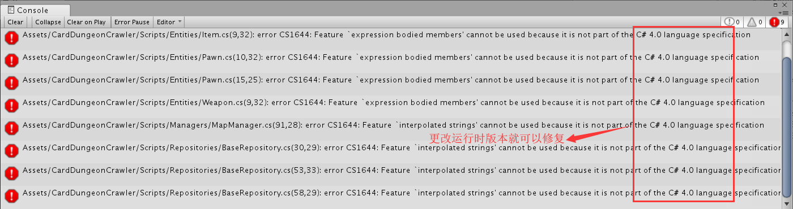
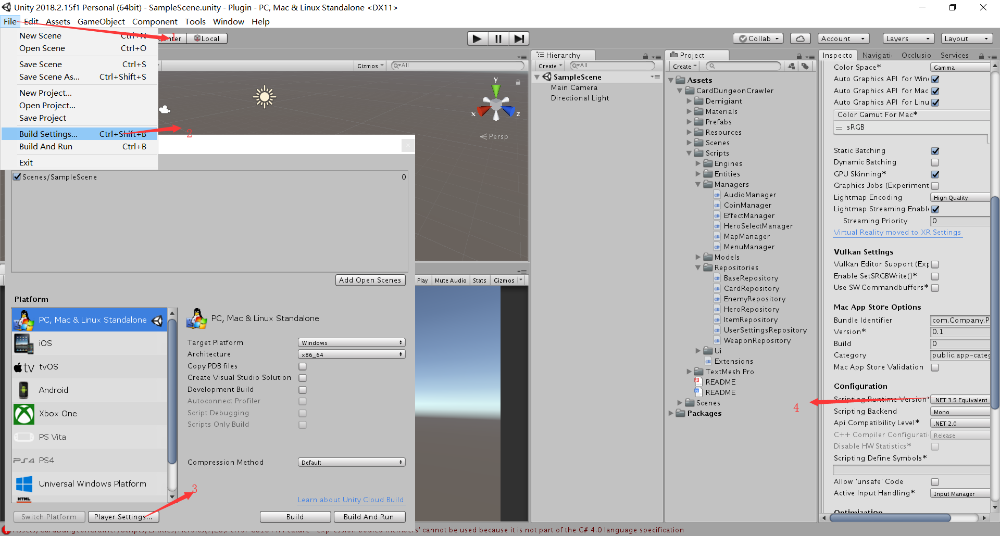
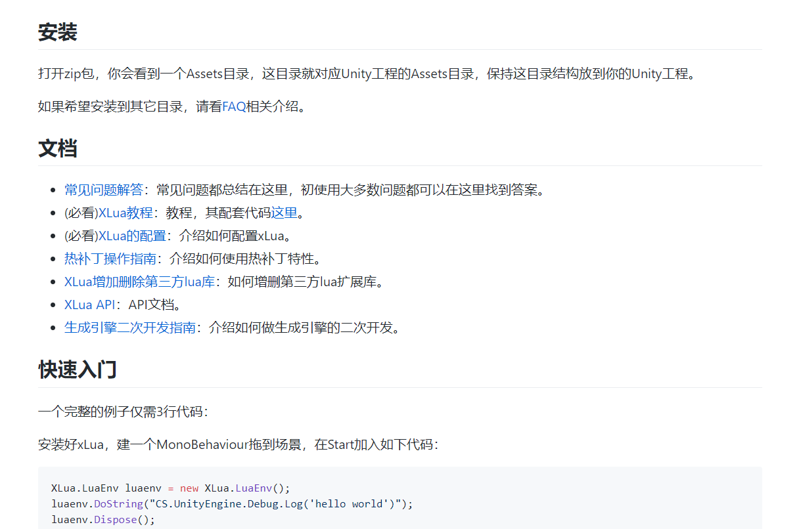
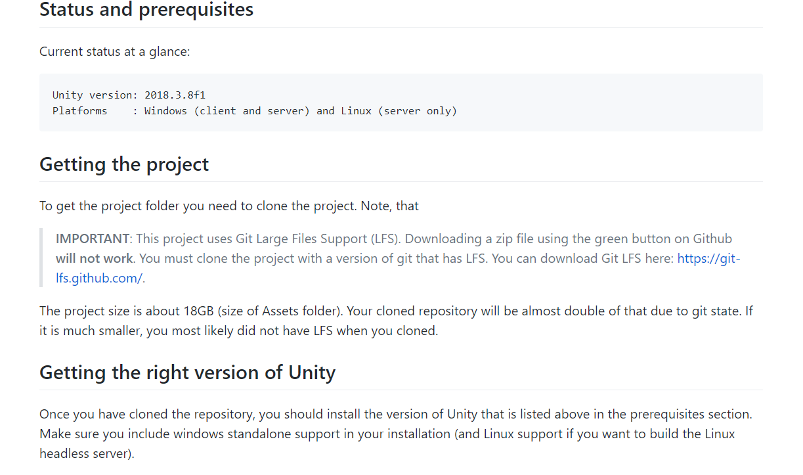
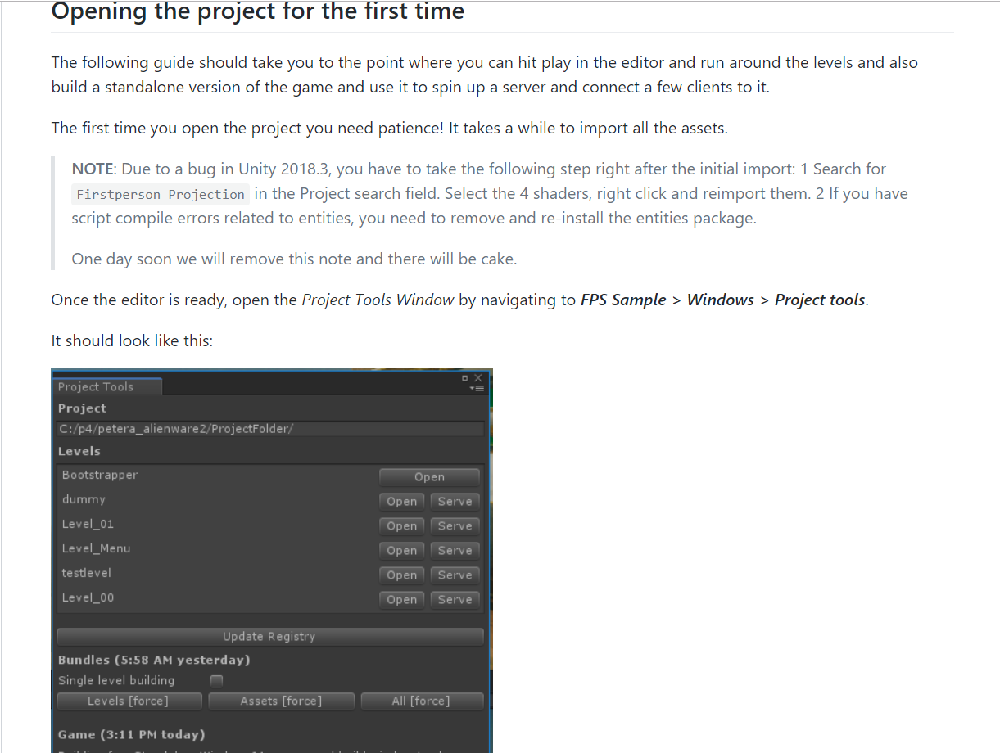

Unity小白级别错误
编辑器

Game窗口这两个选项是初学者容易选中而且不易发现的，并且他们的效果有时候又会如同bug般存在。(ps.我的一个同学毕设的时候，出现这个问题全局音效丢失，当时我以为他是大神，就在反复排查代码，可是始终没有发现问题，后来无意中看到这个东西，当时1w只CNM奔腾而过)。
建议 出现这类问题去看看你的Unity基本的配置有没有问题，没有问题再去检查代码。这些还有类似的就是Unity 2018 SRP配置，ECS配置，打包发布时的一些包名 代码优化的配置等等。
脚本
对于初学者脚本是最头疼的问题，如果你有一丢丢的编程基础还好，如果没有那就是绞尽脑汁，再费劲的看也看不出来问题，而对于lua python 那种尾结束符 手动对齐代码 就更是难上加难了。
1
2
3
4
5
6
7private GameObject player;
private PlayerInput pin;
private void Init()
{
player=GameObject.FindGameObjectsWithTag("Player");
pos=GetComponentInChildren<PlayerInput>();
}以上的代码在Unity中肯定会报错的，这里Markdown不会检测语法错误。这些问题其实对于有一点oop编程的人来说，第一时间就算不知道这些方法是干什么的，也能通过方法的返回值去检查到错误的原因。但是对于小白来说他们可能只是为了偷个懒，自动补全的时候没有注意看方法名，或者是敲错了类名而导致这样的错误。对于这中错误，我也是无能无力了，一般情况下，你首先要掌握一门编程语言，然后在报错的时候去查看console的报错信息(当你有了语言基础之后，对于Unity的报错基本上就是那几种了，稍微思考一下结合代码就能找到问题所在了)。
插件源码
对于插件一般你从正常途径下载到的基本上都不会出现问题的(Asset Store,Github,公司内部迭代集成)，而且还会有完整的说明文档。
- 但是有些插件，比如Unity4.x常用的插件(接触的比较晚，不做太多的评论，比如NGUI)，这种插件出问题的原因一般是，对于Unity升级，C#版本升级，老插件中的API弃用，而Unity更新API的时候没有找到合适的API，这种的解决方案一般就是两种：(1)百度找到当时最稳定的版本，再去下载使用，或者降低Unity版本（2）手动修复弃用API，这种方法只适用与你修改的API对于你的项目没有太大的影响，如果你的项目用到了，可能就没有什么实际的效果；
- 除了这些旧的插件还有一些新的插件要Unity2017甚至更高的版本才能使用，这种最好是使用其推荐的版本，如果还是有问题的话一般就是如图所示的问题：

其解决方案如下：
一般更改后重启Unity都可以解决，最多再修改几个语法点。
- 最后一类是框架类的插件，比如Xlua，ET，GF等等，这些一般都要做一定的配置才能使用，以Xlua为例，使用前先查阅他的readme.md，以及一些入门的入门文档，FAQ都能够少走一些坑，对于这些框架首先他们是很NB的，但是对于这些他们多少都会有一些坑，我们最直接地避免就是查看源作者的FAQ，其次是一些开发者的bolg记录。只有站在巨人的肩膀上才能让我们的开发之路稍微的顺利一点。
对于源码一般都是比较顺利的，比如常见的客户端代码，只要使用正常的版本去打开，基本都可以正常打开。一般不太容易打开的是那种双端源码，这种就需要仔细查看作者编写的文档，配置前后端，配置表，配置数据库的用户等等，具体还要就不同的项目而论。这里来看看Unity官方的FPSExample，这个源码我也是研究了蛮久到现在还没有打开(只能说我需要换电脑了，单下载我就下载了半天,单贴图8.+G)，这个比较坑的点比较多，当时官方使用的版本我没有下载到，下载到之后，又要使用 git lfs(当时我来git怎么使用都一脸懵逼)，导入之后还要进行fix，总之我没有打开，等以后换了电脑再去体验吧。

稍微有英语水平者食用更佳，没什么水平就翻译吧。首先Unity版本Unity2018.3.8f1,平台window
。其次获取工程必须要使用Git Large File Support，其实这个工具很好弄多一行代码就可以了
$ git lfs install
然后使用git GUI或者命令都可以正常下载，就是时间有点久，我感觉可能把它先弄到码云里面再去下载可能会快一点(电脑太破，下载下来也打不开)。

然后第一次打开还会有点问题需要重新导入一下(其实我根本就没有搞到这一步)，后面的坑我就没有踩到，不过做到这步基本就可以了。后面继续按照后面的要求操作应该可以打开了，感兴趣的朋友可以去搞一搞，这个源码是Unity的一个里程碑式的分水岭，从mono到ECS。
Last but not least
- 首先，第一次写blog可能很垃圾，希望大家看的时候给点建议，而且还不知道这个能不能收到评论。
- 很多点都是之前感觉很坑现在写的时候却不记得多少了，反正就是写的时候，脑子基本上是空白的。
- 我是一个找不到工作的小垃圾，总是在弄一些旁门左道，希望以后的道友帮我解决一下工作的问题吧。